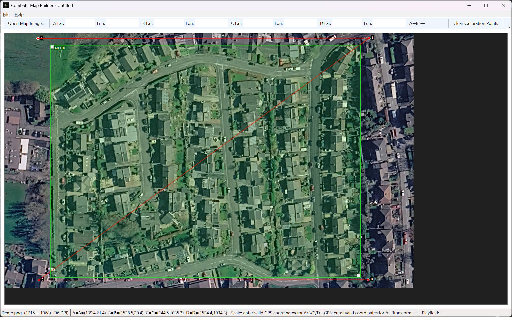

GETTING STARTED / 01
Create maps.
Every CombatLR game starts with a map of the place you intend to play. MapBuilder turns a suitable image into a GPS-calibrated site package that the mobile app and player units can use.
A browser-based version is available on the MapBuilder test page. It runs locally in your browser and exports the same map.bmp and map.json package. The original Windows application remains available; check the exported files carefully while the browser version is being tested.
A Windows PC, CombatlrMapBuilder, a source map image, and the latitude/longitude of four identifiable points visible on that image.
1. Prepare your map image
Choose a clear image that covers the intended play area. It should show enough surrounding detail to identify calibration points accurately. Make sure you have permission to use the image for your project.
Obtaining Map Images
Google Earth should NOT be used to obtain map images for CombatLR. Downloading these images to the ESP32 would potentially break the Google's terms and conditions.
Therefore, under no circumstances should you:
- Place four markers around the area you wish to use.
- Record the GPS coordinates of those markers.
- Take a screenshot of the resulting Google Earth image.
- Use those coordinates to calibrate the map.
- Use the exported files in your CombatLR system.
We accept no responsibility for anyone who might accidentally do these things.
You could even use a drone to capture the site and place 4 brightly coloured markers at known positions.
Pick four points that are easy to recognise both on the image and in the real world. Spread them around the area rather than clustering them together. You will enter the GPS coordinates for each point in MapBuilder.
2. The mapbuilder interface

- Opens the source image that will be used to create the map package. JPG and PNG formats supported.
- Removes all calibration points from the project.
- Exports the map.bmp and map.json files required by the CombatLR.mobile application.
- etc. The Lat and Long coordinates of the calibration points.
The green rectangle is the map image that will be exported to the player units. Resize it with the white squares in the corners.
Drag the map selection area with the mouse.
Use the mouse wheel to zoom the map.
Move the map image with the horizontal and vertical scroll bars.
3. Create a MapBuilder project
- Open CombatlrMapBuilder on Windows.
- Use the File menu to open or create a project.
- Open your source map image.
-
Move and resize the playfield rectangle so it covers the area you want to use. The playfield is exported in the fixed 4:3 format expected by the CombatLR map workflow. .
- Save the editable project if you may want to adjust the calibration or crop later. The editable project is separate from the files used by the game.
MapBuilder uses all four image/GPS correspondences to calculate the map transform. You do not need to enter a manual rotation angle.
4. Export the site package
When the image, playfield and all four calibration points are ready, choose Export Site Package. MapBuilder creates two files in the output directory:
map.bmp1280 × 960 RGB565 map image for the player unit.map.jsonMap metadata, including the crop, scale, geographic bounds and calibration points.
Keep the two exported files together. The mobile app uses the map package when you prepare a game plan.
Confirm that the exported map covers the intended play area and that the four GPS coordinates are correct. A calibration error affects player positions and zone locations throughout the game.
Create a gameplan
With your site package ready, configure players, teams, zones and pickups.
Create gameplans →